|
|
HELP FIND THE FOLLOWING NETHERLANDS LOCATIONS
PAGE 204
THE
SAINT: The Angel's Eye (Leslie Norman: March 1966)
Schiphol-Oost Airport, Amsterdam -The
plane carrying
Simon Templar and the Upwaters arrives in Amsterdam.
Identified by Frank van den Berg, November 2016
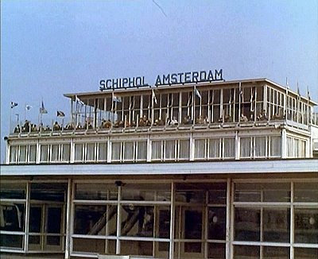
Spiegelgracht, Amsterdam - After
arriving at Schiphol
Airport Simon Templar and Mable and Tom Upwater take a taxi to their
hotel
through the narrow streets of Amsterdam.
Identified by Hans Groot, September 2021

Unknown 1 - After arriving at Schiphol Airport Simon Templar and Mable and Tom Upwater take a taxi to their hotel through the narrow streets of Amsterdam.
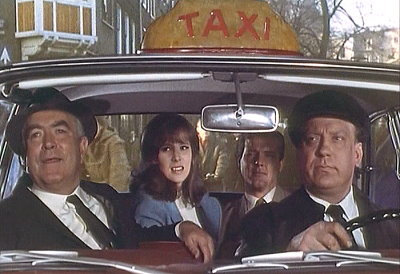 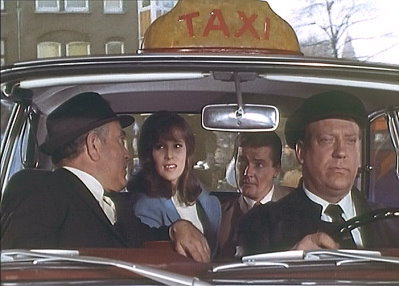
Unknown 2 - Malone and Corbett follow Simon Templar and Mable and Tom Upwater as they leave their Amsterdam hotel.
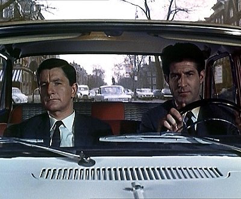 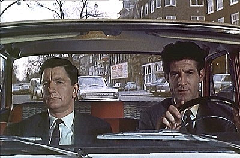
Prins Hendrikkade, Amsterdam - Malone and Corbett follow Simon Templar and Mable and Tom Upwater as through Amsterdam to their meeting with the jeweller who is to cut the Angel's Eye.
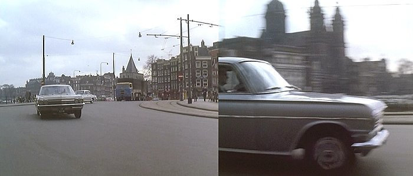
Unknown 3 - Malone and Corbett follow Simon Templar and Mable and Tom Upwater as through Amsterdam to their meeting with the jeweller who is to cut the Angel's Eye.
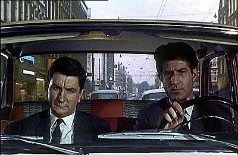
Rokin looking into Dam Square, Amsterdam - Malone and Corbett follow Simon Templar and Mable and Tom Upwater as through Amsterdam to their meeting with the jeweller who is to cut the Angel's Eye.
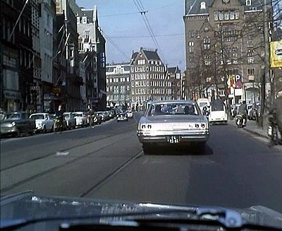
Utrechtsestraat,
Amsterdam -
Malone and Corbett follow Simon Templar
and Mable and Tom Upwater as through Amsterdam (along
Utrechtsestraat from Rembrandtplein) to
their meeting with the jeweller who is to cut the Angel's Eye. Tom
Upwater
suggests that Simon drop him off so he can make his own way to the
jeweller
unfollowed.
Identified by Frank van den Berg, November 2016
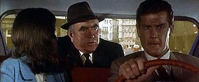 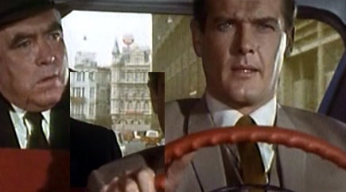
Keizersgracht/Reguliersgracht, Amsterdam - Malone and Corbett follow Simon Templar and Mable and Tom Upwater as through Amsterdam to their meeting with the jeweller. Simon is soon made aware of the car following them over the canal bridges.
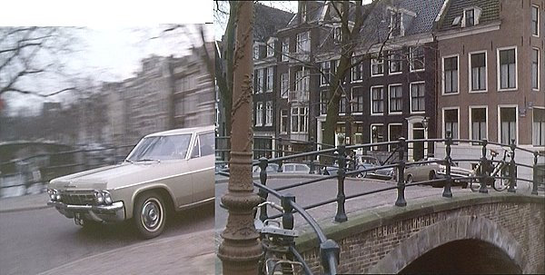 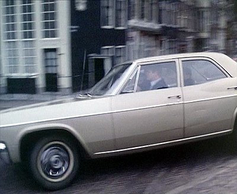 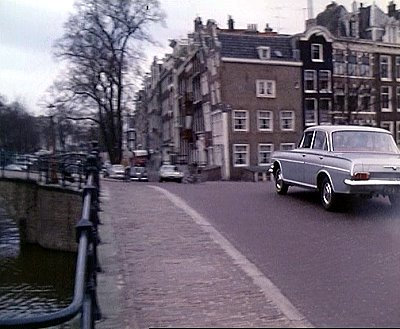
Reguliersgracht, Amsterdam - After dropping Tom Upwater off, Simon and Mable Upwater attempt to loose the car following them in the narrow streets.
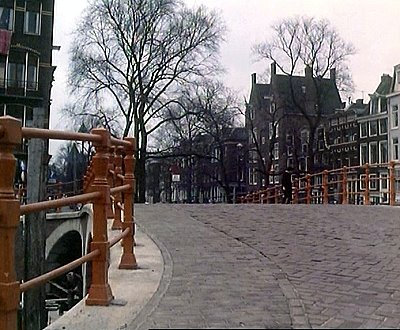 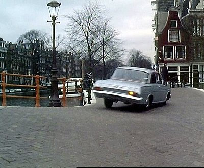
Kinkerstraat,
Amsterdam -
After losing their pursuers After
Simon and Mable Upwater drive back to their Amsterdam hotel wondering
how they
had been followed to Amsterdam at all (Kinkerstraat from
Bilderdijkstraat).
Identified by Frank van den Berg, November 2016
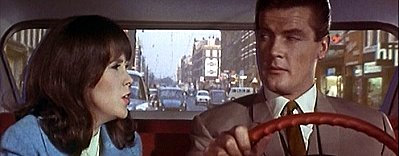 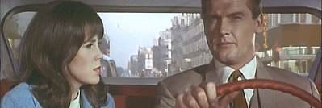
Centraal Station, Stationsplein, Amsterdam - Establishing shot of Amsterdam as Simon and Tom, and Mable Upwater return to their hotel after a night on the town. Simon Templar and Mable Upwater go out for a meal the night he is to steal the diamond.
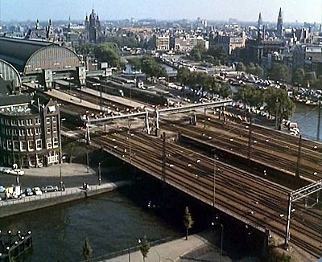 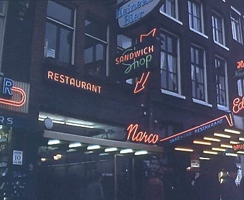 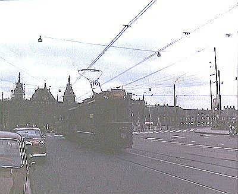
Unknown 6 - Simon Templar takes Mable Upwater for a guided tour of the canals of Amsterdam.
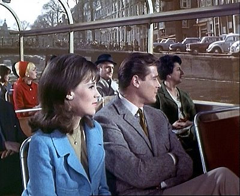 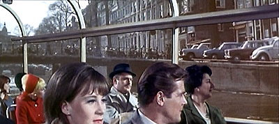
Herengracht
very close to Vijzelstraat, Amsterdam - Simon
Templar takes Mable Upwater
for a guided tour of the canals of Amsterdam.
Identified by Frank van den Berg, November 2020
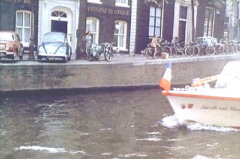
Montelbaanstoren
seen from Oude Schans, Amsterdam
- Simon Templar takes Mable Upwater for a guided tour of the canals of
Amsterdam. The guide on the boat points out the Mint Tower.
Identified by Frank van den Berg, November 2016
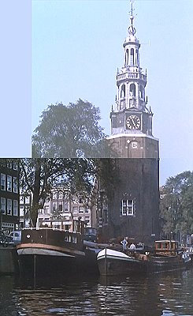
Eerste Weteringplantsoen, Amsterdam - Simon Templar takes Mable Upwater for a guided tour of the canals of Amsterdam.
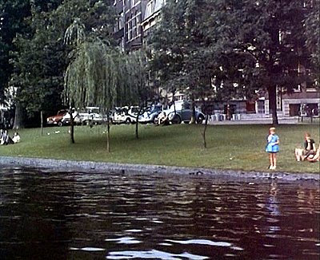
Holland Casino, Leidsekade, Amsterdam - Simon Templar takes Mable Upwater for a guided tour of the canals of Amsterdam.
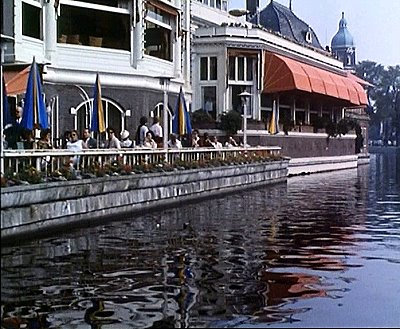
Vondelpark (Amsterdam) - Simon
Templar takes Mable Upwater
for a guided tour of the canals of Amsterdam.
(Identified by Sietse Postma, April 2025)
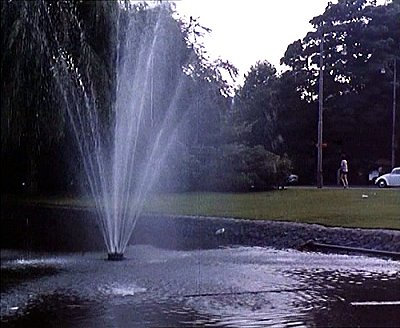
Prinsengracht 267, Amsterdam - Simon Templar takes Mable Upwater for a guided tour of the canals of Amsterdam. The guide on the boat points out Ann Frank's house.
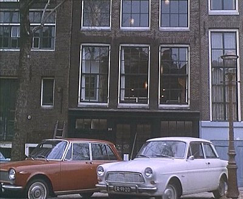
Jodenbreestraat, Amsterdam - After their trip on the canal Simon Templar points out Rembrandt's House to Mable Upwater.
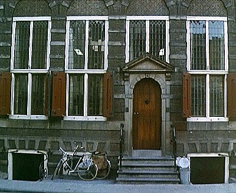
Broekzijdse Mill, Gein Noord, Abcoude, Netherlands - Malone drives Mable Upwater to a windmill outside
Amsterdam where her father is being held.
Identified by Sietse Postma, April 2022
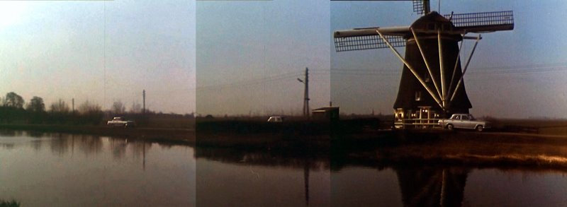
Think you know a spot? Need a bigger image? Email me.
< Previous | Index | Avengerland | Next >
Copyright © 2021 Anthony R. McKay